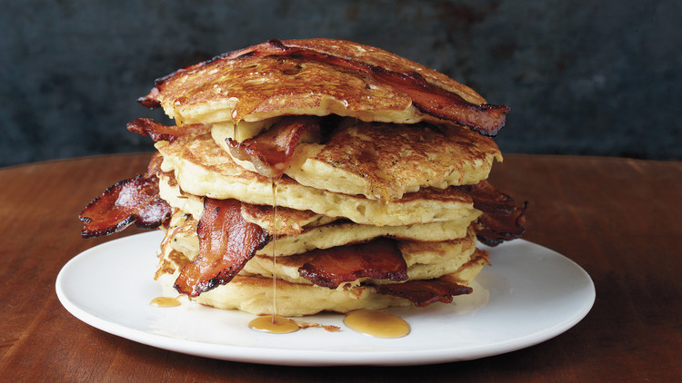

Bacon Pancakes

Description
Pretty self explanatory recipe: bacon and pancakes put together.
Ingredients
- Bacon
- Pancake mix
- Water
- 1 Egg
Steps
- Cook the bacon
- Mix the pancake mix, egg and water to create your batter
- Pour the batter into a pan and while one side of the pancake is cooking, add a slice of bacon to the middle of it
- Voila!